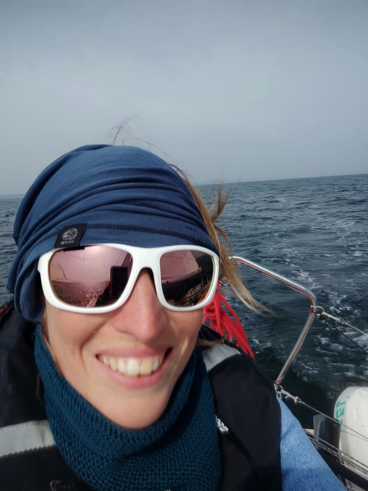
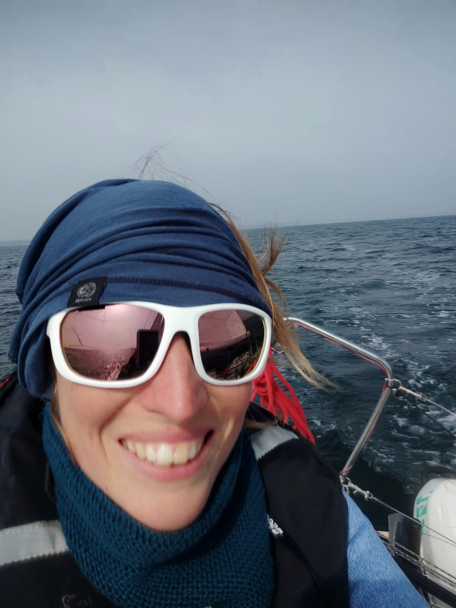
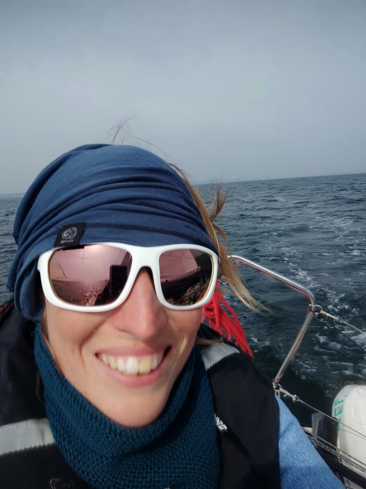

Forts de 15 ans d'expérience dans la construction de minis 6.50, voici notre dernière génération de bateau de série. En association avec le Groupe FINOT architectes, nous avons conçu ce modèle afin de succéder au légendaire POGO. Succession qui s'est plutôt bien passée car pour leur première participation à une transat, trois Pogo 2 ont raflé le podium de la Transat 6.50 2003... Pour obtenir les meilleures performances possibles et garantir le respect d'un devis de poids minimum, nous avons allié les matériaux les plus performants avec les techniques de fabrication évoluées telles que l'infusion nous permettant de réaliser les ponts sous vide et garantissant ainsi un excellent compactage des tissus de verre. Les caractéristiques de stabilité, de vitesse et de sécurité du Pogo 2, nécessaires à la course au large, vous permettront également des navigations en balade côtière pleines de sensations.
